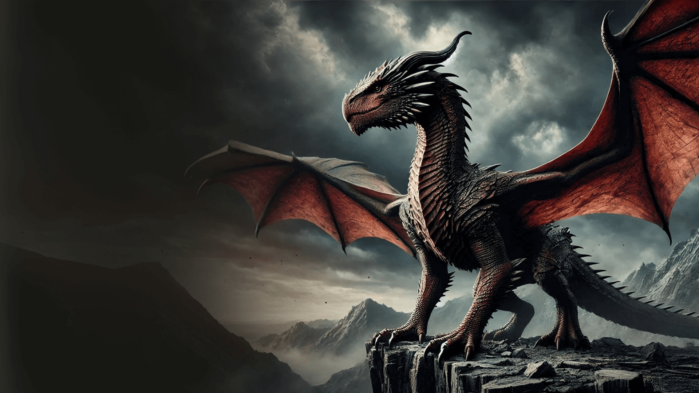
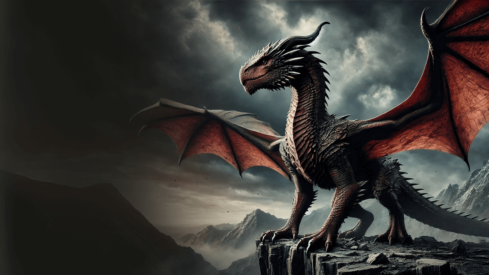

Balerion
Balerion, chamado de terror negro, foi um dragao da casa targaryen. ele foi montado pelo rei aegon I targaryen durante a guerra da conquista.
Syrax
Syrax foi um dragao-femea. ela foi montada exclusivamente por rhaenyra targaryen. seu nome veio de um deus da valentia.
Arrax
Arrax foi um dragao montado pelo principe lucerys valeryon durante a danca dos dragoens
Caraxes
Caraxes, tambem chamado de wyrm de sangue e verme sangrento, foi o dragao montado pelo principe aemon targaryen durante o reinado rei jaehaerys I targaryen e, mais tarde, pelo principe daemon targaryen.
Seasmoke
Seasmoke era um dragao cinza-claro. era grande o bastante para combate durante a danca, mas ainda um jovem dragao, e mais agil no ar do que seus irmaos mais velho.
Vermax
Vermax foi o dragao montado pelo principe jacaerys valeryon. ele prosperava e crescia a cada ano. o dragao ficou mal-humorado quando proximo de neve, gelo e frio. a cor de vermax nao descrita nos livros.
Vhagar
Vhagar foi uma dragao-femea montada por visenya durante a conquista, ao lado do belerion de aegon o conquistador e o meraxes de sua irma rhaenys.